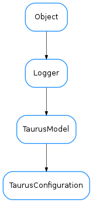

TaurusConfiguration¶

-
class
TaurusConfiguration(name, parent, storeCallback=None)[source]¶ Bases:
taurus.core.taurusmodel.TaurusModel-
DftTimeToLive= 10000¶
-
classmethod
buildModelName(parent_model, relative_name)[source]¶ build an ‘absolute’ model name from the parent model and the ‘relative’ name. - If parent_model is a TaurusAttribute, the return is a composition of the database model name and is device name - If parent_model is a TaurusConfiguration, the relative name is ignored and the parent name is returned
-
getValueObj(cache=True)[source]¶ Returns the current configuration for the attribute. if cache is set to True (default) and the the configuration has events active then it will return the local cached value. Otherwise it will read from the tango layer.
-
no_abs_change= 'Not specified'¶
-
no_archive_abs_change= 'Not specified'¶
-
no_archive_period= 'Not specified'¶
-
no_archive_rel_change= 'Not specified'¶
-
no_cfg_value= '-----'¶
-
no_delta_t= 'Not specified'¶
-
no_delta_val= 'Not specified'¶
-
no_description= 'No description'¶
-
no_display_unit= 'No display unit'¶
-
no_max_alarm= 'Not specified'¶
-
no_max_value= 'Not specified'¶
-
no_max_warning= 'Not specified'¶
-
no_min_alarm= 'Not specified'¶
-
no_min_value= 'Not specified'¶
-
no_min_warning= 'Not specified'¶
-
no_rel_change= 'Not specified'¶
-
no_standard_unit= 'No standard unit'¶
-
no_unit= 'No unit'¶
-
not_specified= 'Not specified'¶
-